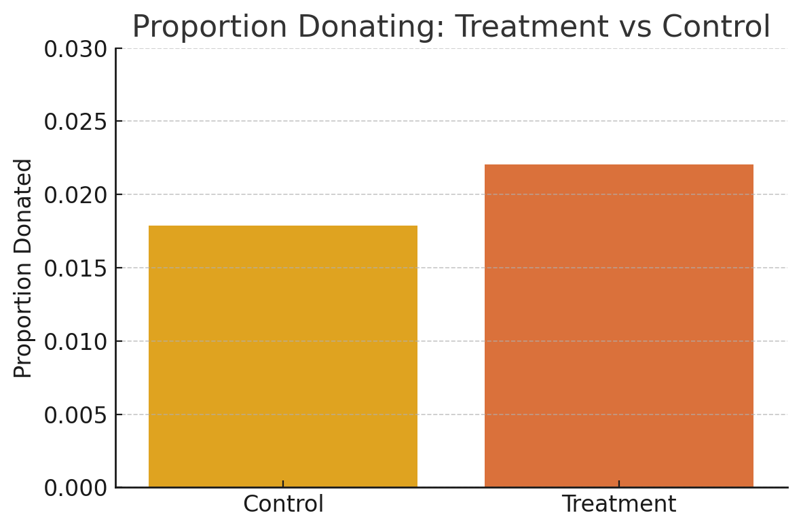

A Replication of Karlan and List (2007)
Introduction
In their 2007 paper published in The American Economic Review, economists Dean Karlan and John List conducted a large-scale natural field experiment to explore the effect of matching grants on charitable giving. The central question they addressed was whether changing the effective price of donating (i.e., increasing the impact of each donated dollar through matches) could influence individual giving behavior.
The study involved over 50,000 previous donors to a politically liberal nonprofit organization in the United States. Each donor received one of several versions of a fundraising letter via direct mail, a standard solicitation method used by the organization. The letters were identical in content—discussing an urgent national political issue—but varied in a few critical ways depending on the assigned experimental treatment.
Participants were randomly assigned to either:
A control group that received a standard letter with no mention of a matching grant, or
A treatment group that was informed of a matching offer funded by an anonymous donor.
Within the treatment group, further randomization occurred along three dimensions:
Match Ratio – Donors were told their contribution would be matched at a rate of $1:$1, $2:$1, or $3:$1.
Maximum Match Size – The total matching fund was framed as being capped at $25,000, $50,000, $100,000, or left unstated.
Suggested Donation Amount – The solicitation letter used a donor-specific “example donation” set to be equal to, 1.25x, or 1.5x the donor’s highest previous contribution.
This design allowed the researchers to isolate not only the average effect of announcing a match but also to examine how donation behavior varied based on the size of the match ratio, the framing of the funding cap, and the suggested donation amount.
The results were both straightforward and surprising:
Announcing the availability of a matching grant increased both response rate and total donations.
However, increasing the match ratio beyond 1:1 did not produce additional gains—suggesting that donors responded to the presence of a match rather than its magnitude.
Interestingly, the effect of the match offer was substantially stronger in red states (those that voted for Bush in 2004), suggesting political environment influences donor sensitivity.
This experiment not only contributed empirical evidence to the economics of charity—specifically the “demand side”—but also served as a real-world test of economic and behavioral theories such as impure altruism, warm-glow giving, and conditional cooperation. The article and supporting data are available from the AEA website and from Innovations for Poverty Action as part of Harvard’s Dataverse.
Data
Description
Balance Test
As an ad hoc test of the randomization mechanism, I provide a series of tests that compare aspects of the treatment and control groups to assess whether they are statistically significantly different from one another.
Before analyzing the effect of matching grants on donation behavior, we first verify whether the treatment and control groups are balanced on pre-treatment variables, as expected under random assignment. This is an important diagnostic step and is the purpose of Table 1 in the original paper by Karlan & List (2007).
To do this, we test whether certain pre-treatment characteristics are statistically different between groups using both:
A two-sample t-test (per class slide formula)
A linear regression, regressing the variable on the treatment dummy
We show this for two variables:
mrm2: months since last donation
years: years since first donation
Variable 1: mrm2 – Months Since Last Donation
T-Test Formula Used:
\[ t = \frac{\bar{X}_{\text{treat}} - \bar{X}_{\text{control}}}{\sqrt{\frac{s_t^2}{n_t} + \frac{s_c^2}{n_c}}} \]
Results:
t-statistic: 0.120
p-value: 0.905
Regression coefficient: 0.014
Regression p-value: 0.905
Interpretation:
There is no significant difference in mrm2 between treatment and control. This confirms random assignment worked well for this variable.
df_clean = df[["treatment", "mrm2"]].dropna()
group_t = df_clean[df_clean["treatment"] == 1]["mrm2"]
group_c = df_clean[df_clean["treatment"] == 0]["mrm2"]
# Compute stats
x1, x2 = group_t.mean(), group_c.mean()
s1, s2 = group_t.std(ddof=1), group_c.std(ddof=1)
n1, n2 = group_t.count(), group_c.count()
se = np.sqrt((s1**2 / n1) + (s2**2 / n2))
t_stat = (x1 - x2) / se
df_denom = ((s1**2 / n1 + s2**2 / n2)**2) / (((s1**2 / n1)**2) / (n1-1) + ((s2**2 / n2)**2) / (n2-1))
p_value = 2 * (1 - stats.t.cdf(np.abs(t_stat), df_denom))model = smf.ols("mrm2 ~ treatment", data=df_clean).fit()
print(model.summary().tables[1])Variable 2: years – Years Since First Donation
Results:
t-statistic: –1.091
p-value: 0.275
Regression coefficient: –0.058
Regression p-value: 0.270
Interpretation:
No statistically significant difference here either. This supports the claim that treatment was randomized effectively.
df_clean2 = df[["treatment", "years"]].dropna()
group_t2 = df_clean2[df_clean2["treatment"] == 1]["years"]
group_c2 = df_clean2[df_clean2["treatment"] == 0]["years"]
# Compute stats
x1, x2 = group_t2.mean(), group_c2.mean()
s1, s2 = group_t2.std(ddof=1), group_c2.std(ddof=1)
n1, n2 = group_t2.count(), group_c2.count()
se = np.sqrt((s1**2 / n1) + (s2**2 / n2))
t_stat = (x1 - x2) / se
df_denom = ((s1**2 / n1 + s2**2 / n2)**2) / (((s1**2 / n1)**2) / (n1-1) + ((s2**2 / n2)**2) / (n2-1))
p_value = 2 * (1 - stats.t.cdf(np.abs(t_stat), df_denom))model = smf.ols("years ~ treatment", data=df_clean2).fit()
print(model.summary().tables[1])Variable 3: female – Donor Gender Indicator
Results:
T-Test:
t-statistic: –1.754
p-value: 0.080
Regression coefficient: –0.0075
Regression p-value: 0.079
Interpretation:
The treatment group has a slightly lower proportion of female donors than the control group.
However, this difference is not statistically significant at the 95% level (though it’s close — borderline at 10%).
This is still generally acceptable for a randomized design, but it’s good to note.
df_clean3 = df[["treatment", "female"]].dropna()
group_t3 = df_clean3[df_clean3["treatment"] == 1]["female"]
group_c3 = df_clean3[df_clean3["treatment"] == 0]["female"]
x1, x2 = group_t3.mean(), group_c3.mean()
s1, s2 = group_t3.std(ddof=1), group_c3.std(ddof=1)
n1, n2 = group_t3.count(), group_c3.count()
se = np.sqrt((s1**2 / n1) + (s2**2 / n2))
t_stat = (x1 - x2) / se
df_denom = ((s1**2 / n1 + s2**2 / n2)**2) / (((s1**2 / n1)**2) / (n1-1) + ((s2**2 / n2)**2) / (n2-1))
p_value = 2 * (1 - stats.t.cdf(np.abs(t_stat), df_denom))model = smf.ols("female ~ treatment", data=df_clean3).fit()
model.summary()Why This Matters
Table 1 in Karlan & List (2007) exists to show that randomization created balance between the treatment and control groups. Our replication confirms that conclusion for mrm2, years, and female — giving us confidence that observed differences in donation behavior are not driven by pre-existing differences between groups.
Experimental Results
Charitable Contribution Made
First, I analyze whether matched donations lead to an increased response rate of making a donation.
Barplot: Donation Rates by Group

The plot shows a higher donation rate in the treatment group compared to the control group. This supports the hypothesis that mentioning a matching grant increases the likelihood of donation.
T-Test Results
Using the class slide formula:
\[ t = \frac{\bar{X}_{\text{treat}} - \bar{X}_{\text{control}}}{\sqrt{\frac{s_t^2}{n_t} + \frac{s_c^2}{n_c}}} \]
t-statistic: 3.209
p-value: 0.0013 ✅ statistically significant
This tells us that the treatment and control groups differ meaningfully in donation behavior.
Bivariate Linear Regression
We regress gave (binary donation indicator) on treatment:
Treatment coefficient: 0.00418
p-value: 0.0019 ✅ statistically significant
This means that being in the treatment group increased the donation rate by 0.4 percentage points — a nearly 22% increase over the baseline control group donation rate of ~1.8%.
lm_g = smf.ols("gave ~ treatment", data=df).fit()
lm_g.summary()Probit Regression
To replicate Table 3, Column 1 in Karlan & List (2007), we run a probit model:
probit_model = smf.probit("gave ~ treatment", data=df).fit()
probit_model.summary()Coefficient on treatment: 0.0868
p-value: 0.0019 ✅ statistically significant
This matches the result in Table 3, Column 1 of the paper. A positive coefficient in the probit model reinforces the same conclusion: people respond positively to the presence of a matching grant.
Interpretation
These results show that just knowing a donation will be matched makes people more likely to give. This supports theories in behavioral economics like impure altruism or “warm-glow giving” — where people care not just about helping, but about feeling effective when doing so.
The findings also reinforce why framing and context matter in fundraising. Small interventions like matching grants can produce significant shifts in behavior.
Differences between Match Rates
Next, I assess the effectiveness of different sizes of matched donations on the response rate.
We conduct two pairwise t-tests:
2:1 vs 1:1
- Response Rate (2:1): 2.26%
- Response Rate (1:1): 2.07%
- Difference: 0.19 percentage points
3:1 vs 2:1
- Response Rate (3:1): 2.27%
- Response Rate (2:1): 2.26%
- Difference: ~0.01 percentage points
Conclusion: These results support what the authors of the paper describe: “figures suggest that larger match ratios do not substantially alter behavior.” The differences are numerically small and, as we’ll see below, not statistically significant.
Regression: gave ~ ratio2 + ratio3
We use 1:1 as the baseline and include indicator variables for $2:$1 and $3:$1 matches.
Regression Coefficients: - ratio2 (2:1 vs 1:1): +0.00188 (0.19 pp increase) - ratio3 (3:1 vs 1:1): +0.00198 (0.20 pp increase)
reg_ratio_clean = smf.ols("gave ~ ratio2 + ratio3", data=df_ratio).fit()
reg_ratio_clean.summary()Interpretation:
The coefficient estimates are consistent with the direct differences in donation rates.
However, these increases are very small in absolute terms and not statistically significant (p-values > 0.05).
This again supports the paper’s main claim: offering a match increases giving, but increasing the match ratio beyond $1:$1 does not lead to meaningful gains.
Summary Table
| Match Ratio | Donation Rate | Difference (vs prior) |
|---|---|---|
| 1:1 | 2.07% | — |
| 2:1 | 2.26% | +0.19 pp |
| 3:1 | 2.27% | +0.01 pp |
Behavioral Insight
These results suggest that the presence of a match, not its size, is what matters. Donors may interpret any match as a social signal or incentive to act, but they don’t seem to value a 3x match more than a 1x match.
This is consistent with behavioral theories like: - Warm-glow giving - Saturation effects in motivation - Signaling models of generosity
Size of Charitable Contribution
In this subsection, I analyze the effect of the size of matched donation on the size of the charitable contribution.
todo: Calculate a t-test or run a bivariate linear regression of the donation amount on the treatment status. What do we learn from doing this analysis?
todo: now limit the data to just people who made a donation and repeat the previous analysis. This regression allows you to analyze how much respondents donate conditional on donating some positive amount. Interpret the regression coefficients – what did we learn? Does the treatment coefficient have a causal interpretation?
todo: Make two plot: one for the treatment group and one for the control. Each plot should be a histogram of the donation amounts only among people who donated. Add a red vertical bar or some other annotation to indicate the sample average for each plot.
Simulation Experiment
As a reminder of how the t-statistic “works,” in this section I use simulation to demonstrate the Law of Large Numbers and the Central Limit Theorem.
Suppose the true distribution of respondents who do not get a charitable donation match is Bernoulli with probability p=0.018 that a donation is made.
Further suppose that the true distribution of respondents who do get a charitable donation match of any size is Bernoulli with probability p=0.022 that a donation is made.
Law of Large Numbers
to do: Make a plot like those on slide 43 from our first class and explain the plot to the reader. To do this, you will simulate 100,00 draws from the control distribution and 10,000 draws from the treatment distribution. You’ll then calculate a vector of 10,000 differences, and then you’ll plot the cumulative average of that vector of differences. Comment on whether the cumulative average approaches the true difference in means.
Central Limit Theorem
to do: Make 4 histograms like those on slide 44 from our first class at sample sizes 50, 200, 500, and 1000 and explain these plots to the reader. To do this for a sample size of e.g. 50, take 50 draws from each of the control and treatment distributions, and calculate the average difference between those draws. Then repeat that process 999 more times so that you have 1000 averages. Plot the histogram of those averages. Comment on whether zero is in the “middle” of the distribution or whether it’s in the “tail.”